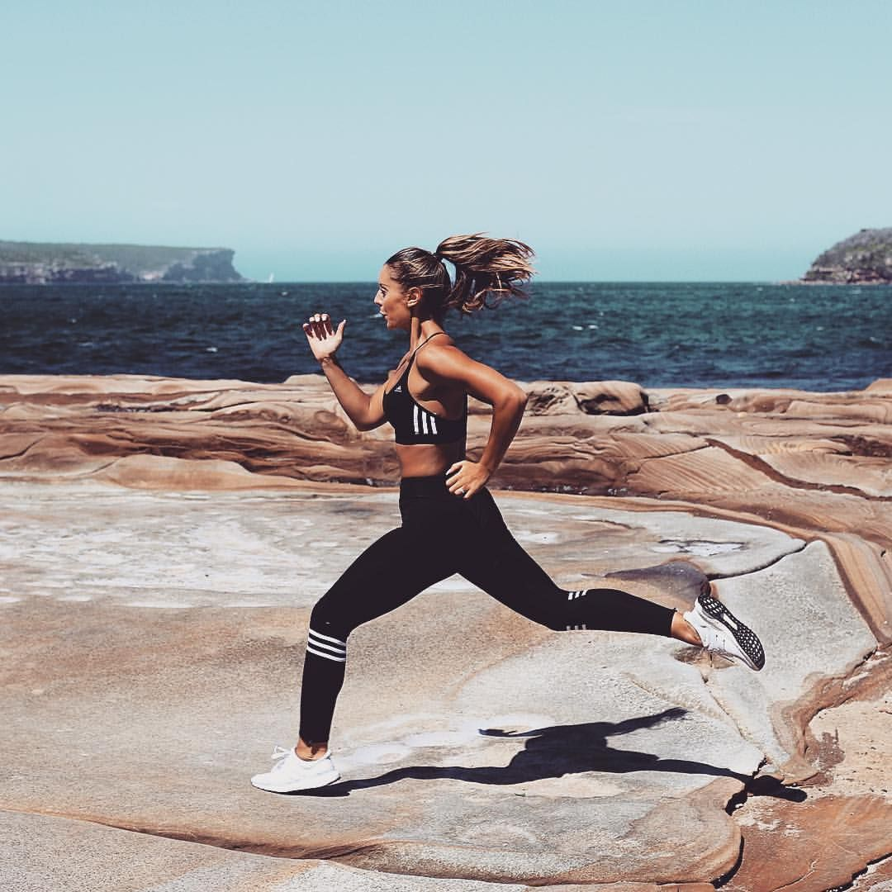

Lenguajes de Programación
C++
HTML y CSS
Matlab
Python
JavaScript
Trabajos y proyectos
Página de monitoreo de la calidad de aire en la Ciudad de México
Semestre Ago-Dic 2020
Este trabajo consistió en la elaboración de una página web donde se mostraran los datos obtenidos de sensores de la Ciudad de México y otros simulados que obtenían la calidad del aire. Para realizarlo fue necesario crear un ambiente de sensores simulados en Packet Tracer y procesar la información de la simulación y la información de los sensores reales en Matlab, guardar esa información en una base de datos en un servidor remoto y mostrar dicha información en una página web.
Detector de ciberataques
Semestre Ago-Dic 2020
Este trabajo consistió en crear un programa en C++ que leyera un archivo de reporte de intentos de conexión a un servidor donde se especificaba la dirección IP que deseaba acceder al servidor, la dirección del servidor, la fecha y hora y la razón por la cuál no se pudo conectar. El programa debía leer dicha información y acomodarla para poder procesarla y detectar posibles ataques de bots si se rgistraba la misma dirección IP intentando entrar al mismo servidor múltiples veces al mismo tiempo. Para este trabajo implementamos hashing y otras herramientas que facilitaron su elaboración
Página de FETEC
Enero 2021
Junto con un equipo detrabajo, realizamos una página web para el grupo FETEC utilizando HTML, CSS y JavaScript. La página tiene una página principal donde se muestra la infromación prinicipal de FETEC, una página que muestra a los integrantes del grupo, una página donde se exponen los eventos que habrán y una página donde se muestran los comités. La página del calendario se conecta con una base de datos que cuenta con toda la información la cual se recolecta a través de un Google Forms
Mis hobbies
|  |
Ejercicio y vida saludableMe esfuerzo por realizar algún tipo de actividad física diariamente, normalmente hago ejercicios de fuerza y resistencia con pesas y peso corporal. También me esfuerzo por llevar una dieta balanceada y saludable y por cuidar mi salud mental y emocional. |
Tocar la bateríaAprendí a tocar la batería cuando tenía 9 años, dejé de ir a clases cuando tenía 12, sin embargo aún practico por mi cuenta en mi tiempo libre y es una actividad que disfruto mucho pues me relaja y también me sirve para expresarme. |
|
FútbolSiempre me ha gustado el fútbol, disfruto jugarlo y verlo. He estado en varios equipos donde usualmente juego de defenza lateral o de volante. Le voy a los Pumas y al Real Madrid y sigo mucho la liga femenil, tanto mexicana como estadounidense. |
|
LeerDisfruto mucho leer en mi tiempo libre, me ayuda a desconectarme un tiempo de mi trabajo y considero que es una gran manera de trabajar la imaginación y aprender nuevas cosas. |
Mis gustos
Series
- The Queen's Gambit
- Atypical
- Grey's Anatomy
- The Wilds
Películas
- Harry Potter
- Inception
- La bella y la bestia
Libros
- Harry Potter
- 1984
- Grit: the power of passion and perseverance
Videojuegos
- The Last of Us
- The Last of Us part II
- Spider-Man
- Detroit Become Human